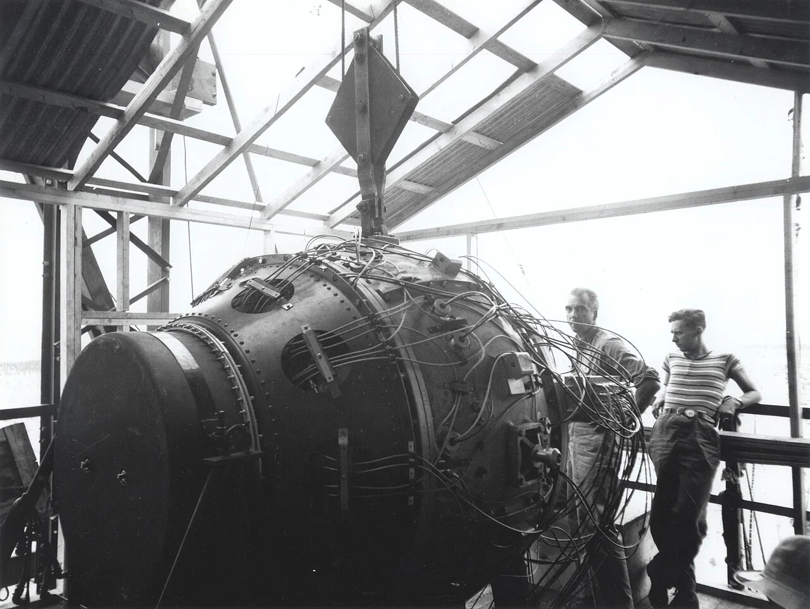
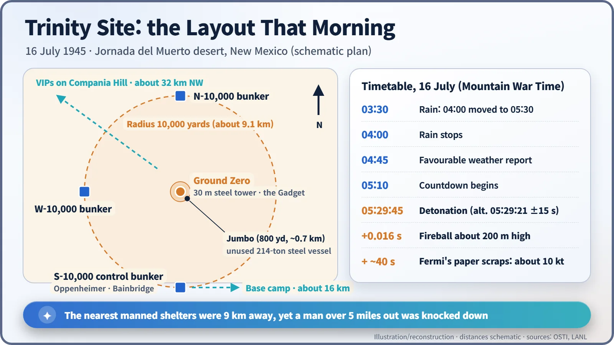
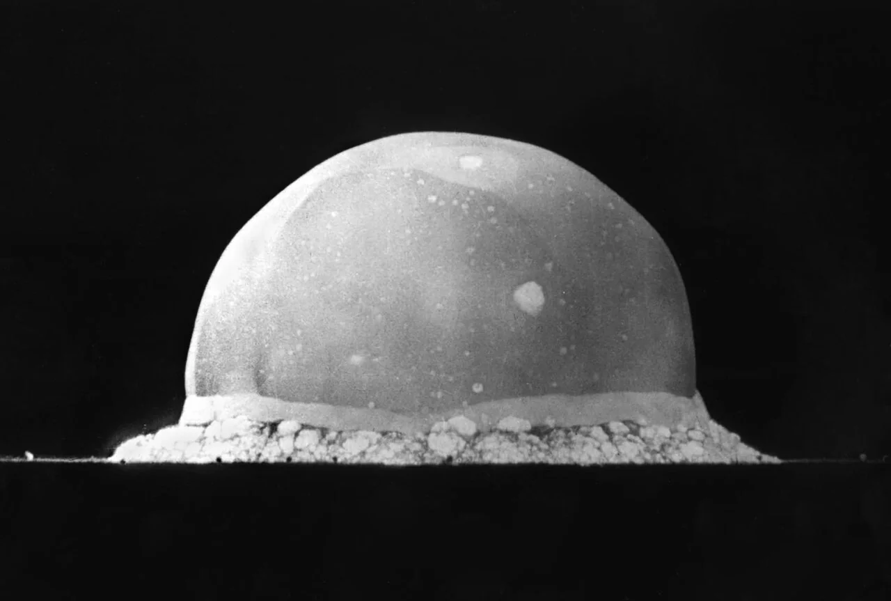
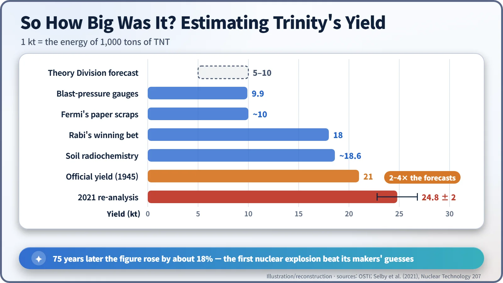
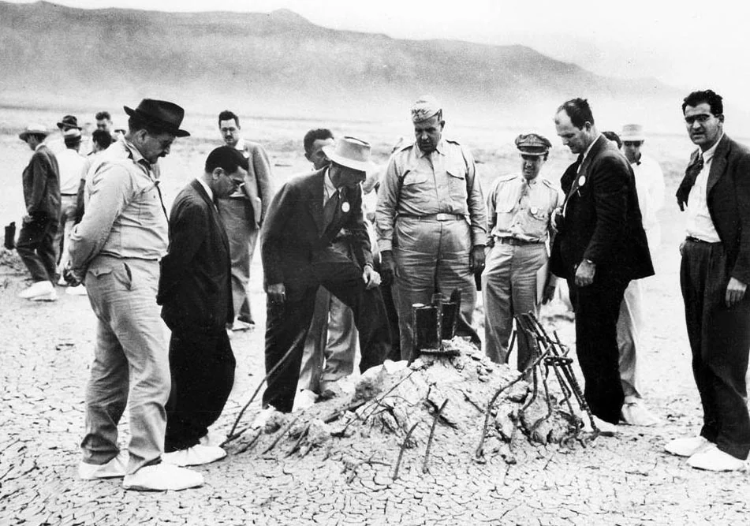

Nuclear History · 117
The Morning the Sun Rose Twice — Trinity, the First Nuclear Explosion (1945)
A rain delay, a 214-ton steel bottle nobody used, Fermi's paper scraps and a yield still being recalculated 75 years later.
At 5:29 a.m. on 16 July 1945, the Manhattan Project set off the first nuclear explosion, a plutonium implosion device called the Gadget, in the New Mexico desert. Its yield of 21 kilotons was far above most predictions, and a 2021 re-analysis raised it to 24.8 ± 2 kilotons. The test settled whether implosion worked, and it also left fallout, unanswered questions and a lasting mix of awe and dread.
"Now I'm scared."
Before dawn on 16 July 1945, in a bunker in the New Mexico desert, the countdown reached ten seconds. Physicist Kenneth Greisen turned to Isidor Rabi and admitted it out loud. Then came zero. The desert, still dark, was suddenly as bright as noon. Ernest Lawrence later wrote that it was like going "from darkness to brilliant sunshine in an instant." The sun, in effect, rose twice that morning. [1]
A bomb nobody could trust on paper
Why set one off at all? The uranium "gun" design was simple enough that its builders were willing to use it untested. Plutonium was the problem. A plutonium bomb needed implosion: a shell of explosives fired all at once to crush a metal ball inward until it went supercritical. If the charges did not fire almost simultaneously, the ball would merely be squashed out of shape. No amount of calculation could guarantee success.
The test device was nicknamed the Gadget. Its heart was two hemispheres of plutonium–gallium alloy weighing 6.19 kg together. The site lay on the Alamogordo Bombing Range, about 210 miles (340 km) south of Los Alamos, in a stretch of desert named Jornada del Muerto, "the Journey of the Dead Man." The name "Trinity" is usually credited to J. Robert Oppenheimer (1904–1967), supposedly inspired by the poetry of John Donne, though its exact origin is uncertain. The test director was Harvard physicist Kenneth Bainbridge (1904–1996). [1] [4]

A heart assembled in a ranch house
On 12 July the plutonium core left Los Alamos in an army sedan. On 13 July it was assembled in the abandoned McDonald ranch house near the site, and on 14 July the finished device was winched to the top of a 100-foot (30 m) steel tower.
Nearby stood Jumbo, a 214-ton steel vessel built as an insurance policy: if the explosion fizzled, it would contain the scarce plutonium for recovery. In the end the scientists did not use it. Jumbo stood empty 800 yards from the tower and survived the blast. Observers spread out to three shelters 10,000 yards (about 9.1 km) north, west and south of the tower; the south shelter was the control bunker. VIPs watched from Compania Hill, about 20 miles (32 km) to the northwest. [1] [4]

Ninety minutes of rain, then 0.016 seconds
The shot was set for 4:00 a.m. Rain and lightning changed that: at 3:30 Leslie Groves (1896–1970) and Oppenheimer pushed it back to 5:30. The rain stopped around 4:00, a favourable weather report came at 4:45, and the countdown began at 5:10.
The detonation time is usually given as 5:29:45 a.m. Mountain War Time, although a later analysis puts it at 5:29:21 (±15 seconds). A high-speed camera caught the fireball just 0.016 seconds after detonation, already about 200 m tall. George Kistiakowsky, more than five miles away, was knocked off his feet by the blast wave, and Hans Bethe was blinded for almost half a minute. [1] [4]

Measuring a bomb with scraps of paper
About 40 seconds after the flash, Enrico Fermi (1901–1954) dropped a handful of paper scraps. The blast wave pushed them roughly 2.5 m, and on the spot he estimated the energy at about 10,000 tons of TNT. The formal analysis gave 21 kilotons, more than twice Fermi's figure and about four times what most people at Los Alamos had predicted. Then, in 2021, 75 years later, a Los Alamos team re-analysed the data and revised the yield to 24.8 ± 2 kilotons. [1] [3]

The heat also turned desert sand into pale green glass, now called trinitite: mildly radioactive, and arguably the first "mineral" of the nuclear age.
What people said at the moment of success
Not everyone cheered. Bainbridge called it a "foul and awesome display" and told Oppenheimer: "Now we are all sons of bitches." Oppenheimer's famous line from the Bhagavad Gita, "Now I am become Death, the destroyer of worlds," is often imagined as something he said in the desert. In fact he spoke it on camera in a 1965 television documentary, recalling that the verse had come to mind; there is no record of him saying it aloud at the site. [1]

The Army put out a cover story about an exploded ammunition dump. A coded telegram carried the news to the American delegation at the Potsdam Conference, which opened the next day.
What drifted beyond the desert
The cloud rose to about 25,000 feet (7,600 m) and drifted north-northeast. Stafford Warren, the Manhattan District's chief medical officer, reported that fallout across a band about 30 miles wide and 90 miles long was "potentially a very dangerous hazard." Some ranch families missed by the Army's survey received significant exposures over the following two weeks, and livestock suffered skin burns and hair loss. [2]
Local residents downwind, the "downwinders", were left out of the 1990 Radiation Exposure Compensation Act (RECA). A July 2025 amendment brought New Mexico into the programme for the first time, though advocates say it still does not go far enough. [6]
The site became a National Historic Landmark in 1965 and still opens to the public about once a year. Eighty years on, the exact time and yield are still being recalculated. The mix of awe and dread felt in that desert at dawn was clear from the very first moment. [5]